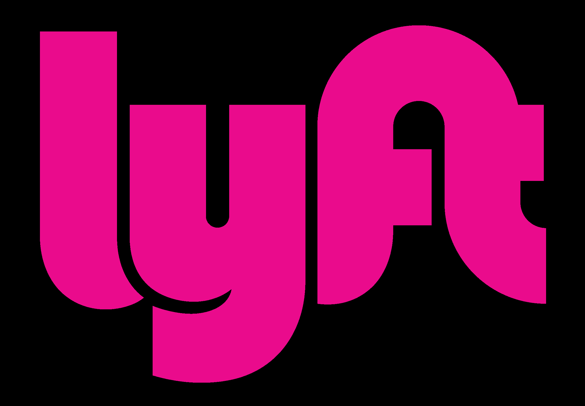

Transportation in Boston
Subway (the "T")
Red Line
Orange Line
Green Line
Blue Line
Silver Line
Filter by line:
All
Red
Green
Blue
Orange
Silver
Ride Apps

Additional Modes of Transportation
MBTA buses
For more information on transportation in Boston, visit the
MBTA website
.